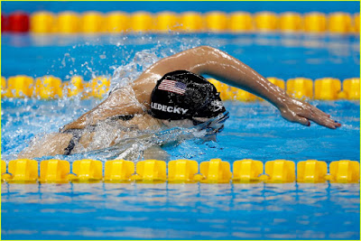

主動向後划水與推水是游泳沒有效率的主因！

我知道這個標題很讓游泳老手驚訝，就跟我一開始讀到這個理論時一樣「這什麼鬼啊！」怎麼可能不主動向後划水，那要怎麼前進！？我一開始完全無法置信，也被這個理論折磨了很久。畢竟我練游泳接近十年後才接觸到這個理論，抱水與推水的意識型態已經太深了。但現在我完全想通了，想趁最近開始重新享受游泳的樂趣時，把水中移動的理論跟大家分享：
首先，不管任何物體的移動都是「支撐」與「轉換支撐」的結果。以跑步來說是左腳支撐在地面，右腳移動，接著換腳；以自行車騎行來說是右腳向上抽拉，使重量轉移到左邊，左腳支撐在踏板上才能驅動後輪。
希臘哲人亞里斯多德曾針對「支撐」這個概念下了一段精闢的結論：「當身體的某部分正在移動，另一部分則必定處於靜止狀態；而那個移動的部分必先將『支撐』它自身之後才能開始移動。」
身體當作支撐點的部位必須夠穩固(最好是靜止不動)，另一部分才能提高移動效率。
例如在沙地上跑步，因為支撐點不穩固，所以很難向前跑；又例如穿著跑鞋騎車，鞋底太軟，同樣的力道下輸出到後輪的 Power 會比較低。
以自由式來說，就變得相當微妙。我們以今年奧運女子自由式四面金牌得主姬蒂（Katie Ledecky）的這張照片為例，當她的左肩/左臂出水「向前移動」到準備入水時，依亞里斯多德的結論，必須要有支撐，她的左臂才能從出水的位置移動到現在入水前的位置，而且這個支撐點必須相當穩固(最好是靜止不動)，才能使左臂的移動很有效率。
這個支撐點在哪呢？
沒錯，就是照片中隱藏在水中的右手。右手在水中支撐得愈穩，左邊的身體就能移動得愈快/愈有效率；這就像我們在陸地上走路時右腳站得愈穩，左腿移動得愈快的道理一樣；反之，當左腿移動得愈快(加速度愈大)，右腳所承受的壓力也愈大。因為 F=ma，加速度 a 愈大，支撐力 F 也會愈大。也就是說，照片中姬蒂的左臂抬得愈高或愈快(或愈高使得浮力減小)時，右臂的負荷也會愈大。
重點來了，若照片中的姬蒂右手主動向後划水，原本應該穩固不動的支撐點，因主動划手，向後動了，在水面上方的左肩、左臂與左手的移動都會失去效率→泳速變慢。
「主動划水」就像坐在池邊用力把水向後划一樣是：身體不動，手掌動；但技巧高超的泳者所做到的是：手掌不動，身體動。
但在奧運的轉播畫面中，我們明明就看到每位選手都在向後划手啊！那只是相對運動的假象。看起來是手在動，其實是身體快速向前進時，手掌被留在後方所造成的假象。若我們定格看姬蒂手掌入水與出水的位置的水道線顏色會發現，手掌完全沒有向後划動(滑動)，甚至因為身體前進的慣性，出水點還在入水點之前。
也就是說，自由式划手中的抓水→抱水→推水只是動作的描述，並非我們要去刻意訓練的動作。我們要刻意練的是：身體、手臂在正確的姿勢下使手掌穩固支撐在水中，以及轉肩(轉換支撐)的能力。所以各種手掌搖櫓支撐在水中藉此移動其他身體部分的訓練就變得非常重要了，這之後我們再用另一篇文章來說明。
對於不斷想要提高泳技的朋友來說，不把這個道理想通的話，是絕對很難進步的。
我知道像「抱水之後一定要把水推到底，直到大拇指碰到大腿外側為止才提臂」這樣的話對那些從小就練游泳的人來說一定已經聽過無數次，所以一定跟上述說不要主動向後划水與推水的說法產生很大的衝突。但「支撐與轉換支撐」是所有移動的真理，喜歡游泳的朋友可以試著從上述的邏輯重新思考看看，也許對你泳技的提升會有幫助。